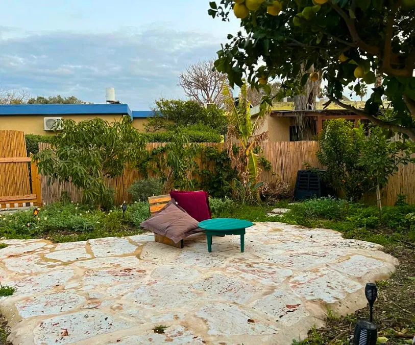
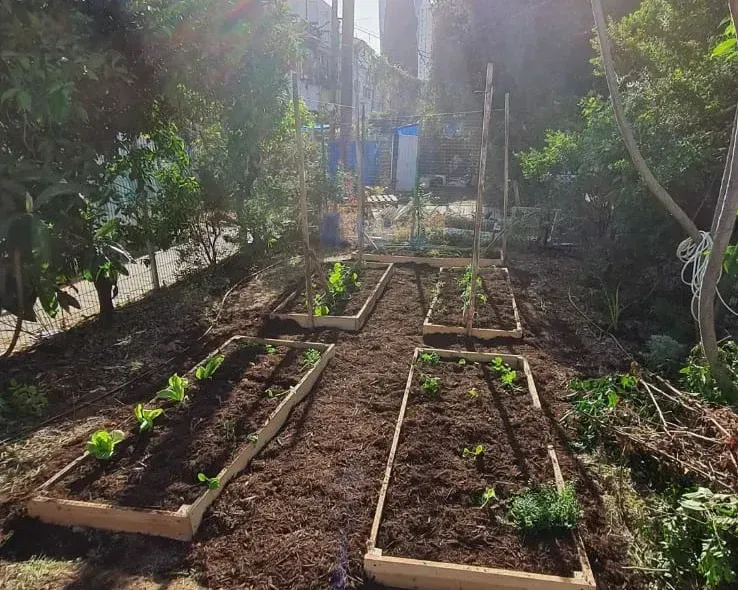
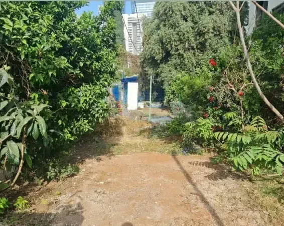
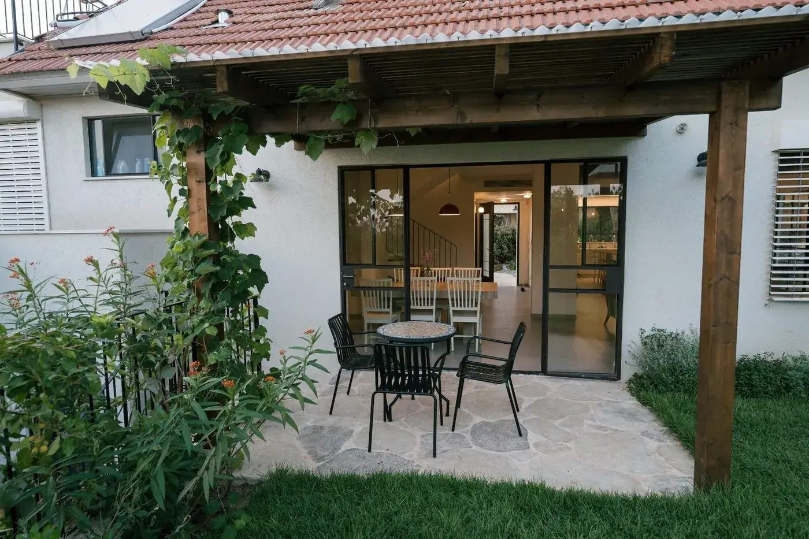
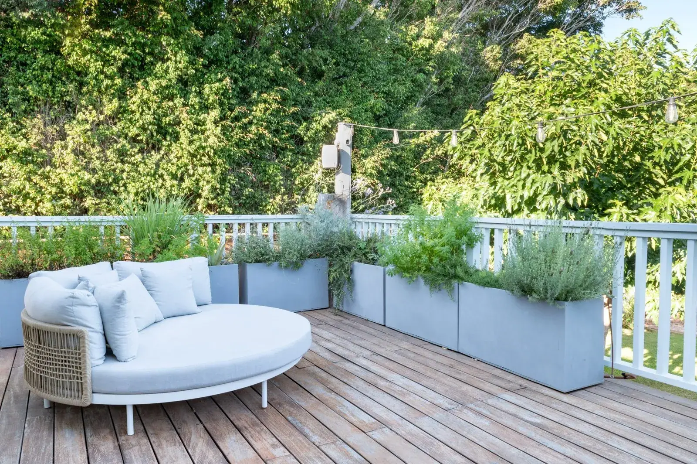
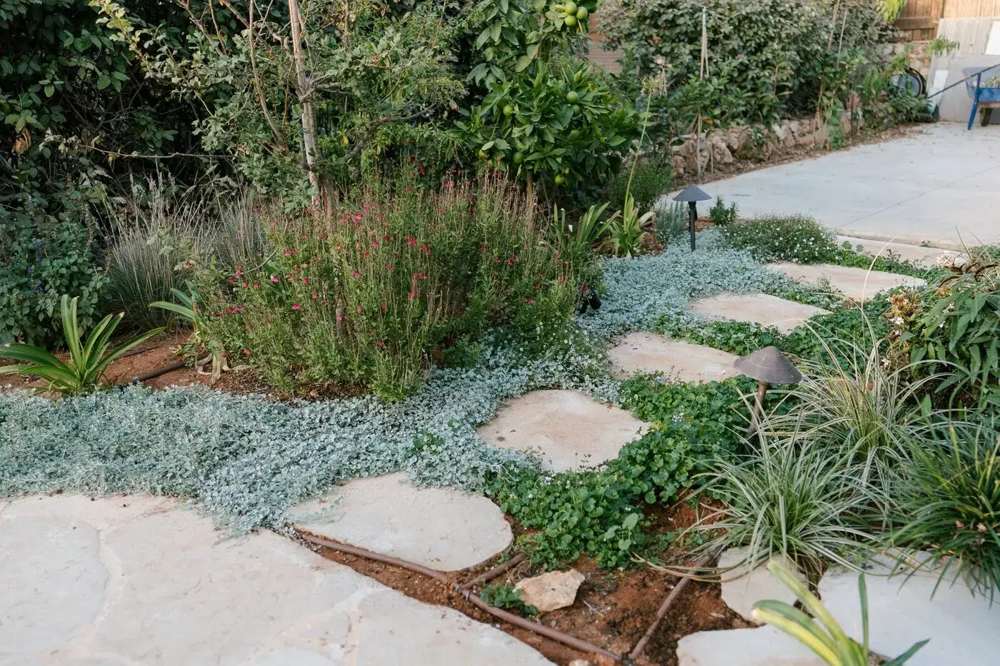
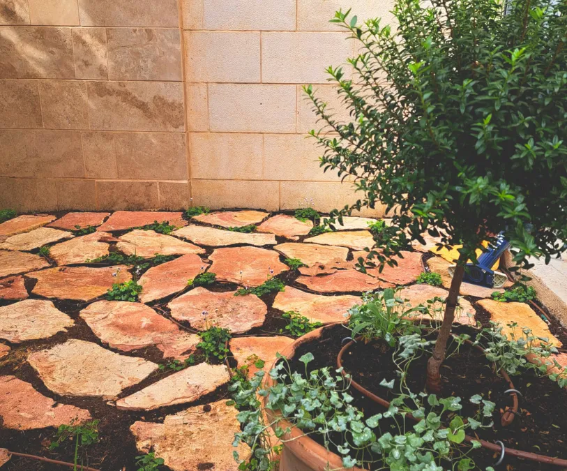

אבני מדרך טבעיות במלט לבן, בזוויות שמנקזות את מי הגשם.
פינת הישיבה
מקום אחד בגינה שבו הזמן מאט. כורסה מתחת לעץ, אור אחר הצהריים מסתנן בין עלי הזית, וריח של מרווה עולה בכל פעם שמישהו עובר ונוגע בה.
- זית
- מרווה
- אזוב
נוף וחורש / הקמת גינות
הקמת גינותאנחנו מתכננים ומקימים גינות ים־תיכוניות לבתים פרטיים בכל הארץ.


לפניאחריאותה חצר, אותה זווית. גררו את הקו.
כל גינה בנויה מכמה ״חדרים״, לפי איך שאתם חיים: איפה יושבים, איפה מארחים, איפה מגדלים. בחרו חדר מהרשימה.

אבני מדרך טבעיות במלט לבן, בזוויות שמנקזות את מי הגשם.
מקום אחד בגינה שבו הזמן מאט. כורסה מתחת לעץ, אור אחר הצהריים מסתנן בין עלי הזית, וריח של מרווה עולה בכל פעם שמישהו עובר ונוגע בה.

שולחן ארוך תחת פרגולה שהגפן מכסה לאט, עונה אחרי עונה. ערבי קיץ עם חברים, קערה של תאנים, ונרות שהבריזה מהים מנסה לכבות.

הדשא שנפגע בשיפוץ עבר שיקום, ואבני מדרך מובילות בו אל הדק.
דשא רך או ערסל בצל, במקום שממנו רואים שמיים. פינה שאין לה תפקיד, חוץ מלנוח בה.

ערוגות ליד המטבח, במרחק של צעד יחף. בזיליקום שנקטף רגע לפני ארוחת הערב, עגבנייה חמה מהשמש, ענף לואיזה לתה של הבוקר.

אבני מדרך שמובילות בין הצמחים ולא סביבם. כל פנייה מגלה משהו חדש: רקפת שפורחת בחורף, ריח של רוזמרין, עוד פינה שלא רואים מהבית.
הרגע הראשון של הבית. שער עץ, שיח שמבשם את הערב, ותחושה שנכנסים למקום שמחכה לכם.
בריכת נוי קטנה שמשקפת את השמיים. קול של מים זורמים שמכסה על הרחוב, וציפורים שלמדו שכאן אפשר לשתות.

ארבעה עצי פרי, שיחי תבלין ופריחה על מצע טוף, ברצועה הצרה שבכניסה.
קירות אבן נמוכים, כמו בטרסות הישנות של הכרמל. בין האבנים צומחים צמחי בר, והגינה נראית כאילו הייתה כאן תמיד.
חרוב או אלה שנותנים צל אמיתי באוגוסט. מתחתיהם האוויר מתקרר, ונדמה שהגינה כולה נושמת.
מעגל של אבנים וספסלים סביב מדורה. לילות חורף, תפוחי אדמה בגחלים, וילדים שנרדמים על הברכיים.
מהפגישה הראשונה ועד שהגינה צומחת. שכבה אחרי שכבה.
האנשים, הרצונות, השימושים והתקציב. פגישה בשטח.
מה תקבלוסיכום של מה שעלה בפגישה, וכיוון ראשון של תקציב.
תכנון בועות: ישיבה, אירוח, רביצה, גידול ומעברים.
מה תקבלוסקיצת בועות של כל החצר, לשיחה ולתיקונים.
פרגולות, דקים, ספסלים, גדרות, חיפויים, שבילים, כניסות, מסלעות ומים.
מה תקבלותוכנית עם חומרים ומידות, והצעת מחיר מפורטת.
עצים, ערוגות, גינת ירק, דשא מותאם, השקיה וניהול מי נגר.
מה תקבלורשימת צמחים, ותוכנית השקיה וניקוז.
הצוות של נוף וחורש, בעלי מקצוע וספקים.
מה תקבלולוח זמנים, ואיש קשר אחד לכל הביצוע.
טיפול שמביא את הגינה לתוצאה שאליה תוכננה.
מה תקבלוביקורים קבועים, לרוב אחת לשבועיים.
חיו בבית עונה אחת לפני שמחליטים על הכול.
עונה בבית מלמדת איפה השמש נעצרת אחר הצהריים, איפה נקווים המים בחורף ואיפה באמת יושבים. אבל יש דברים שכדאי לתכנן מוקדם, לפני שהבית מתמלא:
צנרת, חשמל לתאורה ולמשאבה, יציקות. אחר כך זה כבר שובר ריצוף.
קו ראשי וברזים במקומות הנכונים, גם אם הצמחים יגיעו אחר כך.
לאן הולכים מי הגשם מהגג ומהחצר, ואיך משאירים אותם באדמה.
שלוש גינות שהתחילו מחצר שלא עבדה לבעליה.

שש אדניות על הדק שליד המטבח, ומהן קוטפים תבלינים, ירקות ותותים.
״יפתח רצה להפתיע את מיקה לכבוד יום הולדתה בהקמת גינת ירק קטנה בפתח הבית.״
ארבעה עצי פרי, שיחי תבלין ופריחה על מצע טוף, ברצועה הצרה שבכניסה.
״בשטח קטן של סה"כ 13 מ"ר הצלחנו להכניס 4 עצי פרי שכבר מניבים, שיחי תבלין ופריחה מהממים״

אבני מדרך בכניסה, סיגליות משתרעות ביניהן, וכד עם הדס.
״בנינו גדר במבוק עם שער מיוחד עבור ציוד הגלישה וחיברנו מערכת השקייה כוללת לכל האלמנטים הנדרשים בגינה.״
זה תלוי בגודל השטח, בחומרים ובמה שכבר קיים בחצר. בפגישת ההיכרות נדבר על טווח תקציב, ואחרי תכנון האלמנטים תקבלו הצעת מחיר מפורטת, סעיף אחרי סעיף. טווחי מחיר לדוגמה מאיתי
מהפגישה הראשונה ועד שתילה עוברים בדרך כלל כמה שבועות של תכנון, וההקמה עצמה תלויה בהיקף. העונה הכי טובה לשתילה היא הסתיו, עם הגשם הראשון. זמנים מדויקים מאיתי
לא. אפשר להתחיל בתשתיות, בהשקיה ובעצים, ולהשאיר את השאר לעונה הבאה. לפעמים זה אפילו עדיף.
צמחייה מקומית מכירה את הקיץ היבש שלנו. אחרי שהיא מתבססת, בשנה־שנתיים הראשונות, היא צריכה הרבה פחות השקיה מגינה רגילה.
אפשר להמשיך איתנו בתחזוקה קבועה, לרוב אחת לשבועיים, או לקבל מאיתנו הדרכה ולטפל בה בעצמכם.
כן. קורה שמתכנן אחר מתכנן ואנחנו מקימים, או שאנחנו מקימים חלק מהגינה לצד בעל מקצוע אחר.
ספרו לנו על הבית ועל החצר. נגיע, נסתכל ונקשיב, ונצא עם כיוון ראשון לגינה.